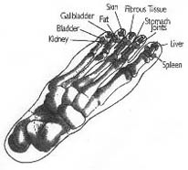

Meridian Stress Assessment
MSA testing uses the Galvanic Skin Response (similar to lie detectors) to measure electrical resistance at various acupoints which represent the organs, glands and systems of the body. This combination of Chinese Medicine and Western Technology allows us to conduct an interview with the body, identifying imbalances in the energy flow and offering natural alternatives to achieve optimal health. By using the body's energy field (Chi), at skin level of the predetermined acupuncture meridians, it is possible to analyze the energetic cause of physical problems.
Why is MSA Testing Important?
Disease states are present in the body's electromagnetic field long before they manifest into disease. MSA testing allows you to see which systems have a low energy and which ones are under stress in order that you may act now to prevent weaknesses from developing to disease.
What Can Be Tested?
The three main components of MSA testing are organ balancing, allergy testing and the efficacy of nutritional products, but the possibilities are endless.
- Bacteria
- Candida
- Viral Patterns
- Chemical and Pesticide Sensitivities
- Heavy Metal Toxicity
Points Used During Testing
Who Benefits from Testing?
MSA testing is for everyone. It is non-evasive, virtually painless and safe for people of all ages. Whether you are looking to improve a pre-existing condition through natural means or wanting to take a proactive approach to your health, MSA testing is for you.
Pricing
| Initial Consultation: | Adults | $140 | 90 Minute Appointment |
| Children (Under 16) | $100 | 60 Minute Appointment | |
| Follow-Up: | 15-60 Minutes | $30-70 |
To book an appointment, Contact Us!
History
MSA instruments (also referred to as Electro Dermal Screening-EDS or Electro Acupuncture according to Voll- EAV) have been used widely in Europe and around the world for over 50 years. Credit is given to Reinhold Voll, a German MD who, in the early 1950's, developed an electronic testing device for finding acupuncture points. He then began a lifelong search to identify the electrical resistance in acupuncture points and how the changes relate to disease states. Voll was successful. He found that patients with lung cancer had abnormal readings on the acupuncture point relating to the lung. Researchers from UCLA and USC have verified these results.
What Are Meridians?
Meridians are rivers of energy which flow through the body and are related to the organ system to which they flow.
Organ Balancing
Using the predetermined acupuncture meridians, (representing nervous system, circulation, pancreas, gallbladder, liver and more) measurements are taken and recorded as balanced, stressed or weakened. The system then allows us to measure the effectiveness of various nutritional products that will assist the body in achieving optimal health.
Nutritional deficiencies, hormonal imbalances, presence of parasites and candida and more.
Allergy Testing
MSA testing allows for effective allergy testing without the use of needles, and because nothing enters the body as with traditional needle testing, this procedure is much safer and relatively pain-free. Testing for over 500 foods or 600 environmental /chemical sensitivities can be completed in one hour. A full colour printout allows you to see how your body responds to the various allergens. Best of all, we offer natural alternatives to help eliminate the allergy.
Efficancy of Nutritional Products
The MSA device has been designed to measure vibration, not only of the energy travelling though the various acupuncture meridians but also the energy within a bottle of nutritional supplements or vitamins. By simply placing the bottle of supplements on the plate, we retest and out of balanced point and can determine the effect of the product on your system before you take it. This step not only saves time by eliminating the guess work of which product to take, but it also saves money, because you only take what you can see will work.
Disclaimer: MSA is listed with Health Canada as a Class II Medical Device; its purpose is not a diagnostic tool for disease identification.